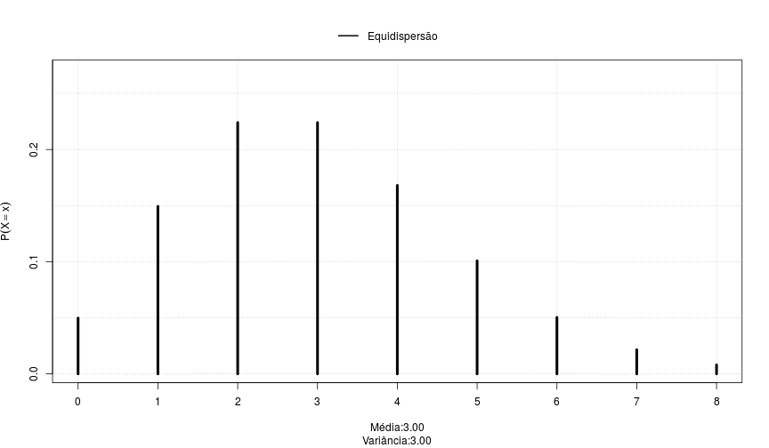
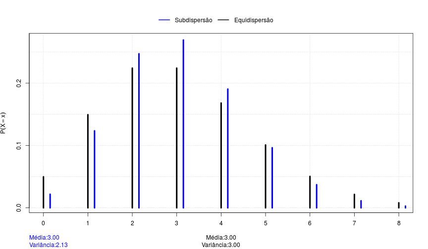
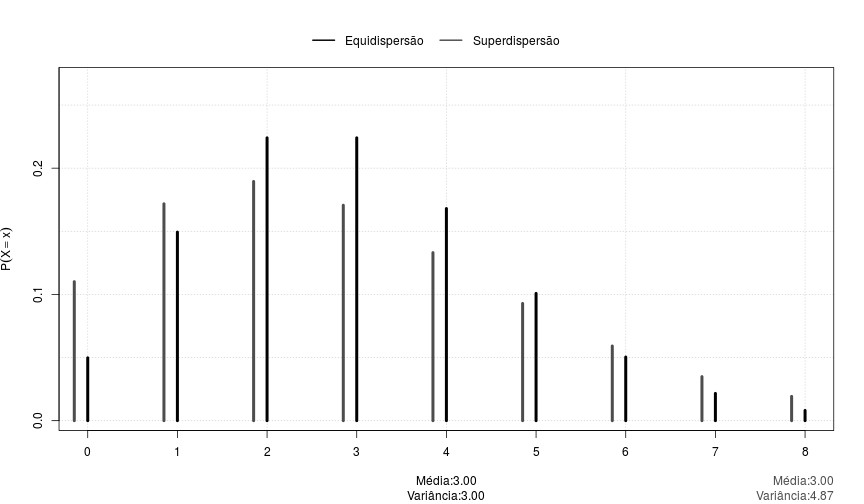
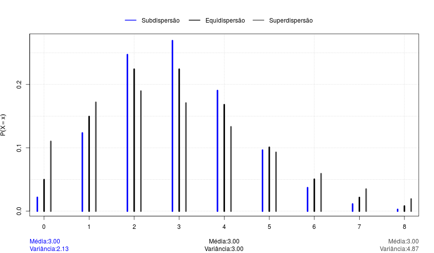
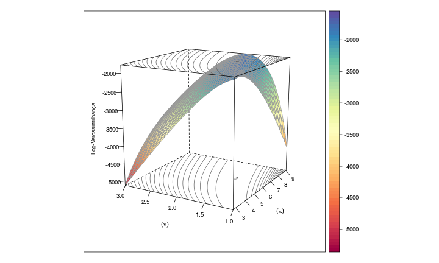
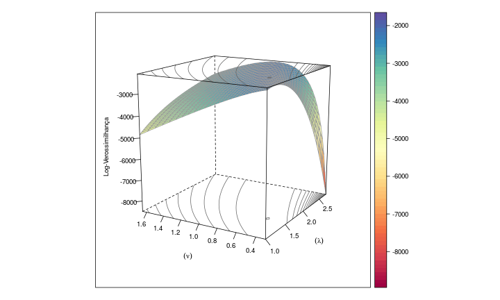
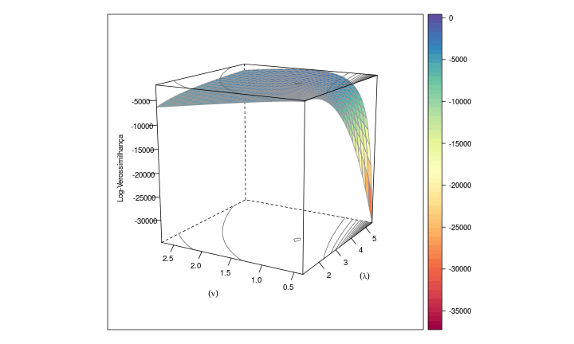

Distribuição COM-Poisson
Dados de Contagem Sub e Superdispersos
Eduardo Junior
PET-Estatística
Introdução
Dados de Contagem
- Variável aleatória discreta
- Assume somente um número enumerável de valores (finito ou infinito)
Representam o número de ocorrências de um evento em um intervalo de tempo ou espaço
Exemplos:
- Número de sinistros em um ano
- Número de ligações por mês em uma empresa de telefonia
- Número de frutos obtidos em uma árvore
Distribuição de Probabilidades

Modelando Dados de Contagem
Modelo Probabilístico Poisson
Função distribuição de probabilidade
\[\begin{matrix} P(Y = y ; \lambda) = \frac{e^{-\lambda}\lambda^{y}}{y!} & \text{ } \lambda > 0 \end{matrix}\]
Características:
\(E[Y] = \lambda\)
\(V[Y] = \lambda\)
Distribuição COM-Poisson
Modelo Probabilístico COM - Poisson
Richard Conway e William Maxwell (1962)
Função distribuição de probabilidade
\[\begin{align*} P(Y = y; \lambda,& \nu) = \frac{\lambda^{y}}{(y!)^{\nu}Z(\lambda, \nu)} \qquad \lambda > 0, \nu \geqslant 0\\ &Z(\lambda, \nu) = \sum_{j=0}^{\infty}\frac{\lambda^{j}}{(j!)^{\nu}} \end{align*}\]
Características:
\(E[Y] = \sum_{j=0}^{\infty}\frac{j\lambda^{j}}{(j!)^{\nu} Z(\lambda, \nu)}\)
\(V[Y] = \sum_{j=0}^{\infty}\frac{j^2\lambda^{j}}{(j!)^{\nu} Z(\lambda, \nu)} - E^2[Y]\)
Vantagens

Vantagens

Vantagens

Vantagens

Vantagens
Pertence à família exponencial de distribuições
Tem como casos particulares os modelos:
- Poisson (\(\nu = 1\))
- Bernoulli (\(\nu = \infty\))
- Geométrica (\(\nu = 0\) e \(lambda < 1\))
Desvantagens
\(Z(\lambda, \nu) = \sum_{j=0}^{\infty}\frac{\lambda^{j}}{(j!)^{\nu}}\)
Quando \(\nu = 0\) e \(\lambda \geqslant 0\) não converge
Restrição no espaço paramétrico
Metódo de estimação por máxima verossimilhança é instável
Desvantagens

Subdispersão (\(\lambda\) = 5.66 e \(\nu\) = 1.5)
Desvantagens

Superdispersão (\(\lambda\) = 1.56 e \(\nu\) = 0.5)
Desvantagens

Equidispersão (\(\lambda\) = 3 e \(\nu\) = 1)
Propostas
Métodos de Estimação
- Comparar abordagens para máximização da log-verossimilhança
- Estimar via mínimos quadrados ponderados
- Estimar via abordagem bayesiana
Modelos de Regressão
- Comparar os modelos COM-Poisson com outras abordagens utilizadas (quasi-verossimilhança, binomial negativo, etc)
Aspecto Computacional
Implementar os métodos de estimação e comparação de modelos no software R.
- compoisson (Jeffrey Dunn - 2012)
- COMPoissonReg (Kimberly Sellers e Thomas Lotze - 2011)

Obrigado!